Adderly.Top
Adderly.Top
Скачать MakuTweaker
MakuTweaker позволяет очень гибко и эластично настроить вашу систему под себя,
включая удаление неудаляемых приложений, а также различные параметры реестра,
которые недоступны простым пользователям!


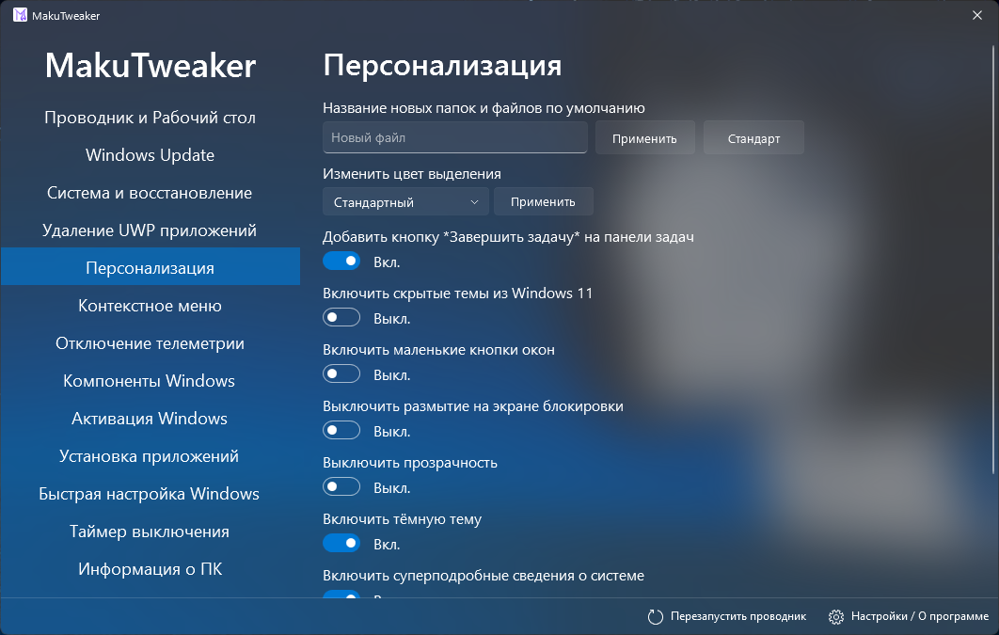
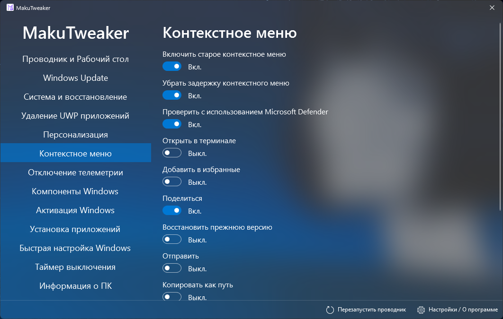
 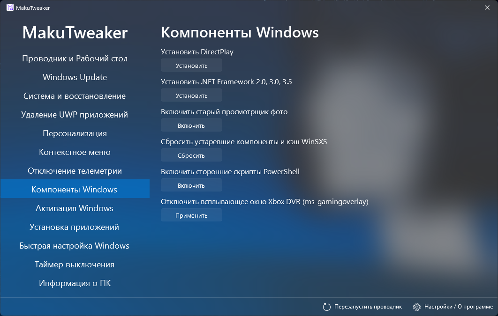
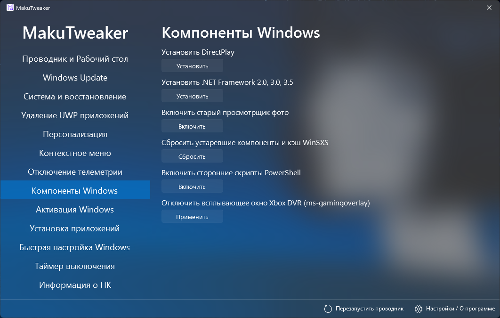

 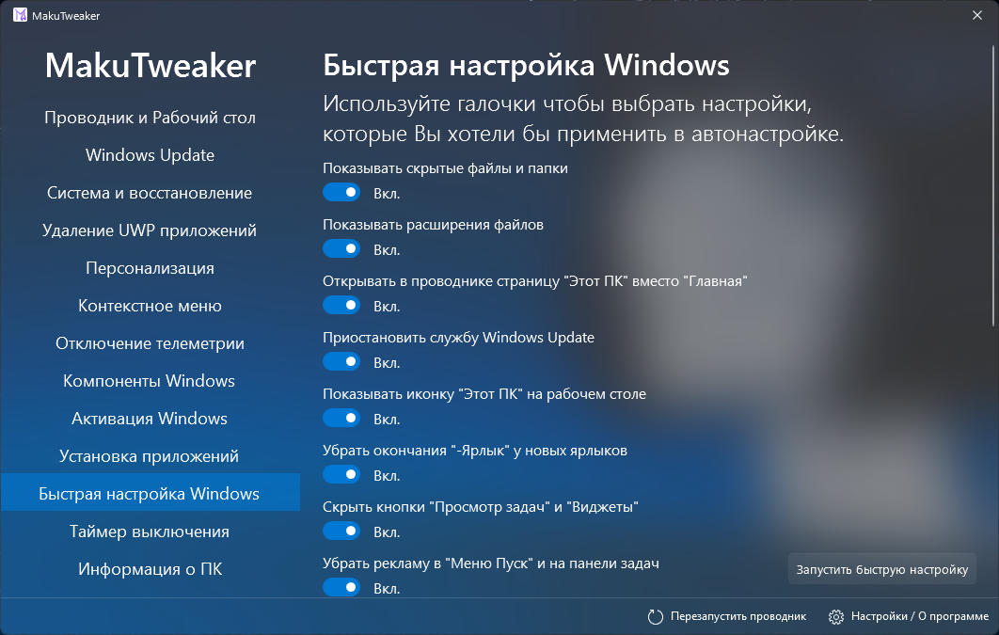
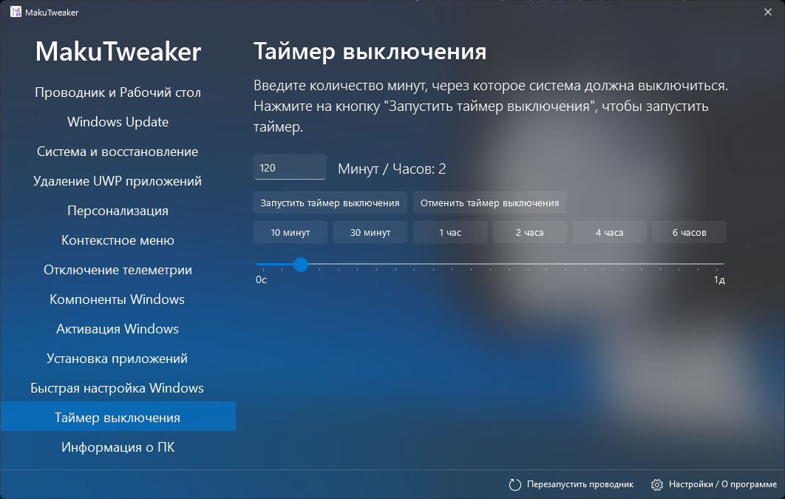
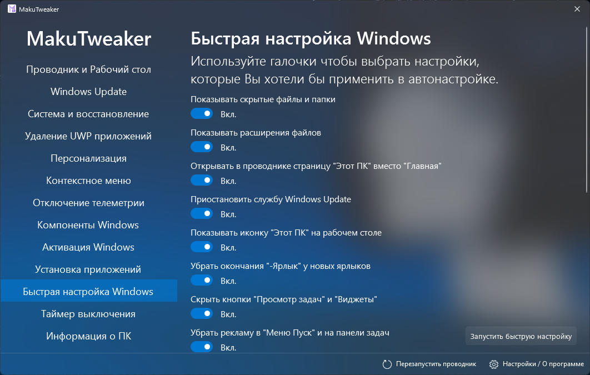
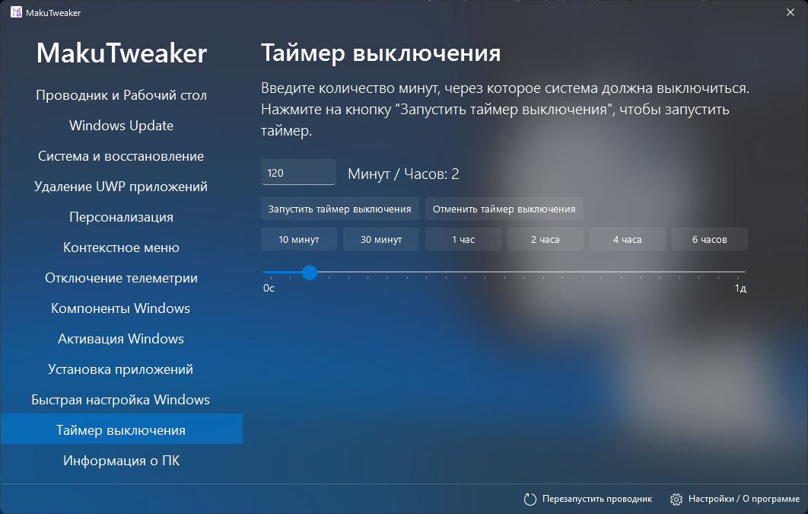
• Для полного функционала нужна Windows 11 22H2.
Была проведена большая работа добавлению функций в которых действительно нуждались люди!
• Был обновлён порядок вкладок в программе! Теперь они отсортированы по важности и по популярности, а так же по виду. В самом начале титульный "Проводник", далее настройка центра обновлений, затем крупнейшая вкладка "Система и восстановление", удаляющее встроенный мусор "Удаление UWP приложения", дальше различные вкладочки... А в конце, серьёзные вкладки типа Активатора, установки приложений, и таймер выключения!
• Был наведён порядок и в разделе "Удаление UWP приложений"! Теперь, мусорные UWP отсортированы по какой либо важности. Слева находятся только сугубо похороненные приложения которые отключены или заброшены компанией Microsoft. Посередине по прежнему вполне терпимые, и к ним прибавилась возможность удалить Outlook!
• Вкладка "Активация Windows" была полезно обновлена! Добавлена активация Microsoft Office, а так же упрощена активация с помощью KMS! Так же, был исправлен вывод об ошибке в случае неудачи, теперь всё снова корректно и понятно отображается. А ещё, были удалены мёртвые сервера.
• На вкладке "Система и восстановление", в опции "Отключить контроль учётных записей" было добавлено предупреждение о том, что на Windows 11 будет переставать работать Drag-and-Drop на панели задач. MakuTweaker никогда к этому не имел отношения, и проблема не связана с ним. Поэтому, если вы замечали это и вам не нравилось, попробуйте включить функцию обратно. Помимо этого, эта галочка была обновлена. Теперь при активации будет включаться дополнительный параметр реестра отключающий надоедливое предупреждение о подписях издателя файла!
• На этой же вкладке была добавлена функция "Включить сторонние скрипты PowerShell".
• Теперь запуск MakuTweaker запрещён на Windows 7, Windows 8.1, и Windows 10 1507. Запуск на этих версиях будет предлагать установить новенькую MakuTweaker Legacy Windows Edition, лёгкую и маленькую специально разработанную для Windows 7 и 8!
• Теперь MakuTweaker запоминает последнюю открытую вкладку. Это особенно удобно для тех, кто часто меняет один и тот же твик.
• Добавлена поддержка Windows 11 25H2. Поскольку Microsoft — это настоящая контора солнышек, на вкладке «Меню Пуск и Панель задач» в этой версии будут скрыты три параметра: управление миниатюрами на панели задач (так как они больше не работают) и скрытие виджетов. На Windows 10, в свою очередь, скрываются неподдерживаемые твики.
• Немного обновлена самая важная вкладка — Windows Update. Очистка кэша теперь перенесена туда, а переключатели размещены в нижней части, чтобы самое важное всегда было наверху.
• На вкладке «Удаление UWP-приложений» теперь можно удалять Будильники — это будет полезно пользователям Windows 10.
• Вкладка «Система и восстановление» получила большое обновление! Среди нововведений:
Добавлена возможность отключения таймера спящего режима и отключения дисплея;
Добавлена функция отключения файла подкачки системы;
Добавлена опция отключения компонента Virtualization-based Security.
• Раздел «Разное» был расформирован. Три функции из него перенесены во вкладку «Система и восстановление» — это отключение SmartScreen, UAC и горячих клавиш. Остальные перемещены в «Персонализацию».
• Была переделана страница «Персонализация». Туда были перенесены две галочки настроек загрузчика - скрытия логотипа Windows и её анимации загрузки, "Отображение супер-подробных сведений о системе", и появились две новые галочки которые будут полезны людям без активации системы - "Включить тёмную тему", и "Отключить прозрачность".
• Вместо расформированного раздела появилась новая вкладка, которую просили многие пользователи! Вкладка «Установка приложений» — именно там теперь можно установить самые необходимые программы: Google Chrome, Telegram, 7-Zip, Steam, медиаплееры и многое другое!
Обновление MakuTweaker - 4.1.0!
• На вкладке "Проводник" появилась функция "Скрытие дисков"
• На вкладке "Система и восстановление" появились две новые функции - Отключение гибернации,
а так же отключение изоляции ядра
• В некоторых вкладках кнопки после применения теперь блокируются, чтобы не путать пользователей
• Были исправлены уведомления требующие перезагрузку системы
• Был исправлен баг на вкладке удаления UWP приложений, где после применения все галочки блокировались или ничего не удалялось
• На русском языке вкладка "Телеметрия" была переименована в "Отключение телеметрии", а при нажатии "Отключить всю телеметрию", теперь включаются все галочки.
• Была исправлена привязка локализаций
Скачать MakuTweaker
Версия для Windows 8.1 и 7


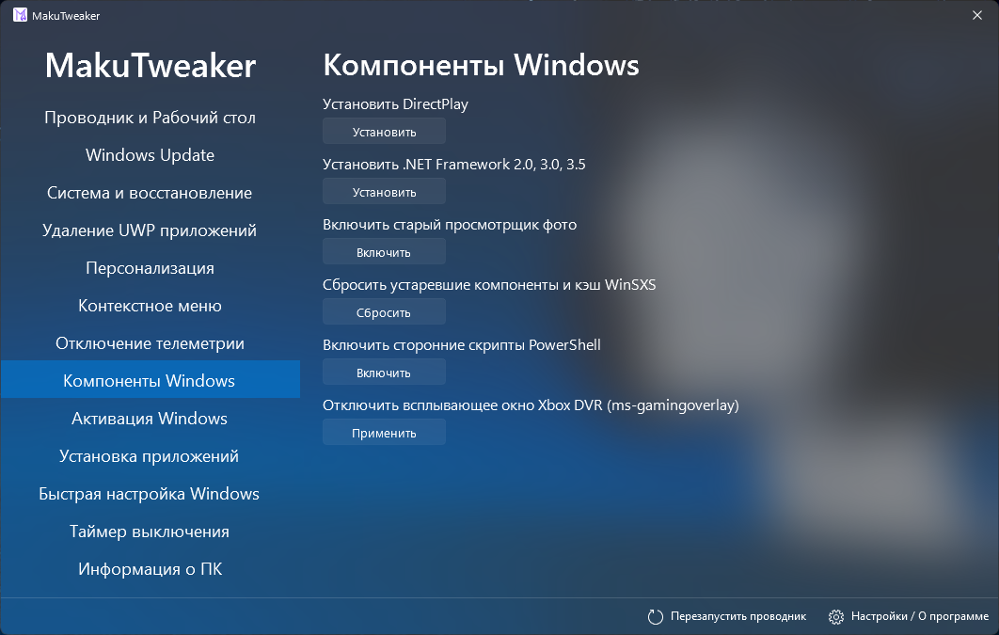
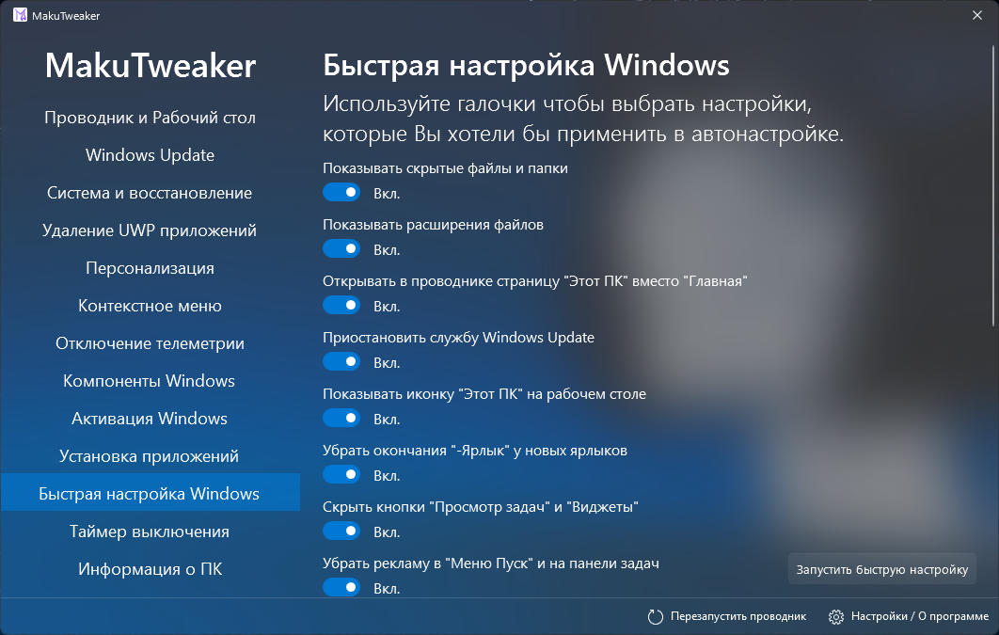
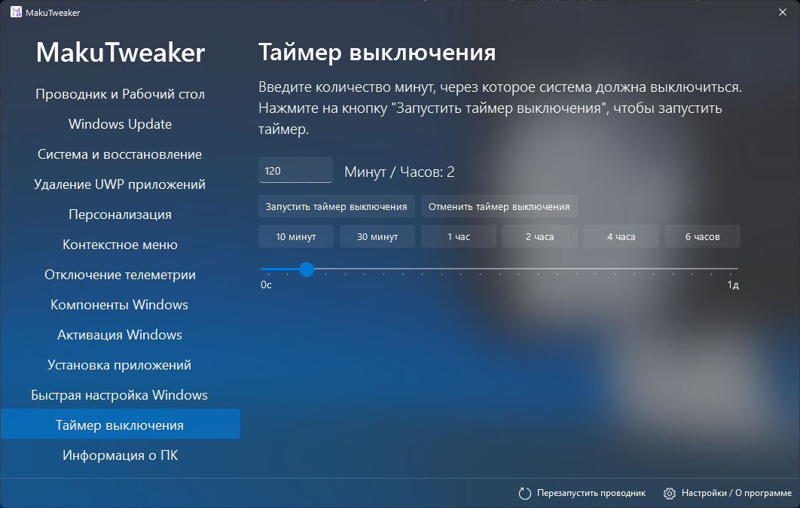
Системные требования
• Для запуска программы нужна Windows 10 1809 (2018) и библиотека NET Core 8.0• Для полного функционала нужна Windows 11 22H2.
Что нового в MakuTweaker 4.3.0?
Новое обновление MakuTweaker 4.3.0!Была проведена большая работа добавлению функций в которых действительно нуждались люди!
• Был обновлён порядок вкладок в программе! Теперь они отсортированы по важности и по популярности, а так же по виду. В самом начале титульный "Проводник", далее настройка центра обновлений, затем крупнейшая вкладка "Система и восстановление", удаляющее встроенный мусор "Удаление UWP приложения", дальше различные вкладочки... А в конце, серьёзные вкладки типа Активатора, установки приложений, и таймер выключения!
• Был наведён порядок и в разделе "Удаление UWP приложений"! Теперь, мусорные UWP отсортированы по какой либо важности. Слева находятся только сугубо похороненные приложения которые отключены или заброшены компанией Microsoft. Посередине по прежнему вполне терпимые, и к ним прибавилась возможность удалить Outlook!
• Вкладка "Активация Windows" была полезно обновлена! Добавлена активация Microsoft Office, а так же упрощена активация с помощью KMS! Так же, был исправлен вывод об ошибке в случае неудачи, теперь всё снова корректно и понятно отображается. А ещё, были удалены мёртвые сервера.
• На вкладке "Система и восстановление", в опции "Отключить контроль учётных записей" было добавлено предупреждение о том, что на Windows 11 будет переставать работать Drag-and-Drop на панели задач. MakuTweaker никогда к этому не имел отношения, и проблема не связана с ним. Поэтому, если вы замечали это и вам не нравилось, попробуйте включить функцию обратно. Помимо этого, эта галочка была обновлена. Теперь при активации будет включаться дополнительный параметр реестра отключающий надоедливое предупреждение о подписях издателя файла!
• На этой же вкладке была добавлена функция "Включить сторонние скрипты PowerShell".
• Теперь запуск MakuTweaker запрещён на Windows 7, Windows 8.1, и Windows 10 1507. Запуск на этих версиях будет предлагать установить новенькую MakuTweaker Legacy Windows Edition, лёгкую и маленькую специально разработанную для Windows 7 и 8!
Что нового в MakuTweaker 4.2.0?
Спустя полгода MakuTweaker наконец получил обновление — версия 4.2.0!• Теперь MakuTweaker запоминает последнюю открытую вкладку. Это особенно удобно для тех, кто часто меняет один и тот же твик.
• Добавлена поддержка Windows 11 25H2. Поскольку Microsoft — это настоящая контора солнышек, на вкладке «Меню Пуск и Панель задач» в этой версии будут скрыты три параметра: управление миниатюрами на панели задач (так как они больше не работают) и скрытие виджетов. На Windows 10, в свою очередь, скрываются неподдерживаемые твики.
• Немного обновлена самая важная вкладка — Windows Update. Очистка кэша теперь перенесена туда, а переключатели размещены в нижней части, чтобы самое важное всегда было наверху.
• На вкладке «Удаление UWP-приложений» теперь можно удалять Будильники — это будет полезно пользователям Windows 10.
• Вкладка «Система и восстановление» получила большое обновление! Среди нововведений:
Добавлена возможность отключения таймера спящего режима и отключения дисплея;
Добавлена функция отключения файла подкачки системы;
Добавлена опция отключения компонента Virtualization-based Security.
• Раздел «Разное» был расформирован. Три функции из него перенесены во вкладку «Система и восстановление» — это отключение SmartScreen, UAC и горячих клавиш. Остальные перемещены в «Персонализацию».
• Была переделана страница «Персонализация». Туда были перенесены две галочки настроек загрузчика - скрытия логотипа Windows и её анимации загрузки, "Отображение супер-подробных сведений о системе", и появились две новые галочки которые будут полезны людям без активации системы - "Включить тёмную тему", и "Отключить прозрачность".
• Вместо расформированного раздела появилась новая вкладка, которую просили многие пользователи! Вкладка «Установка приложений» — именно там теперь можно установить самые необходимые программы: Google Chrome, Telegram, 7-Zip, Steam, медиаплееры и многое другое!
Что нового в MakuTweaker 4.1.0?
Обновление MakuTweaker - 4.1.0!
• На вкладке "Проводник" появилась функция "Скрытие дисков"
• На вкладке "Система и восстановление" появились две новые функции - Отключение гибернации,
а так же отключение изоляции ядра
• В некоторых вкладках кнопки после применения теперь блокируются, чтобы не путать пользователей
• Были исправлены уведомления требующие перезагрузку системы
• Был исправлен баг на вкладке удаления UWP приложений, где после применения все галочки блокировались или ничего не удалялось
• На русском языке вкладка "Телеметрия" была переименована в "Отключение телеметрии", а при нажатии "Отключить всю телеметрию", теперь включаются все галочки.
• Была исправлена привязка локализаций